Ships:
Nostromo |
The Derelict |
Sulaco |
Auriga |
Prometheus |
Covenant |
Corbelan IV
Locations:
LV-426 |
Hadley's Hope |
Engineers' Planet
Setting the Scene
Much of the franchise's atmosphere comes from its settings. Cramped industrial spaceships, remote colonies, and hostile alien worlds all reinforce the sense of isolation that makes the films so tense. This page covers the most important ships, listed in order of the films they appear in, followed by the key locations.
USCSS Nostromo
The Nostromo is the commercial towing vessel at the center of Alien (1979). Owned by Weyland-Yutani, it was hauling a mineral ore refinery back to Earth with a crew of seven when the ship's computer woke them to investigate a signal coming from LV-426. After the crew unknowingly brings a Xenomorph aboard, Ripley ultimately sets the ship to self-destruct and escapes in its shuttle.
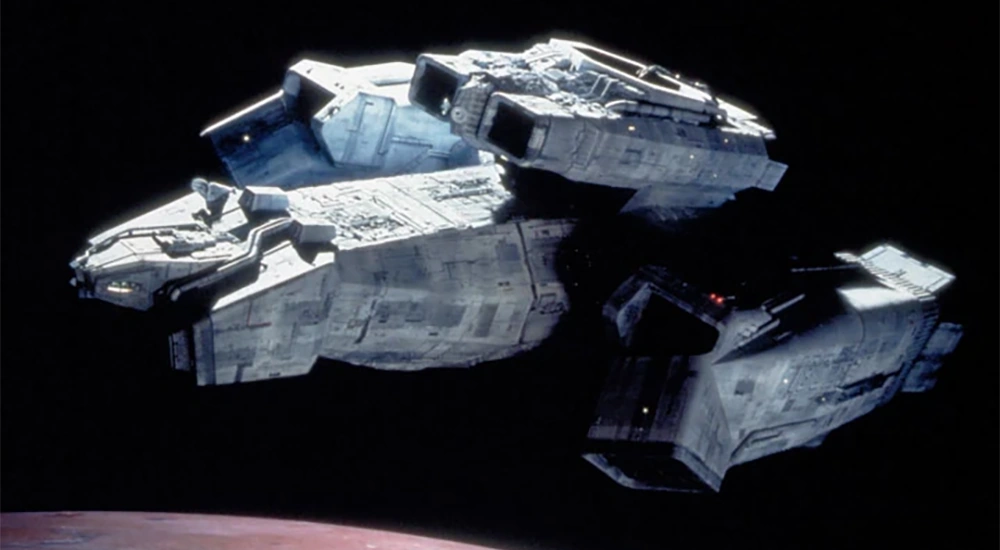
The USCSS Nostromo in Alien (1979). (alienanthology.fandom.com)
The Derelict
The Derelict is the crashed, horseshoe-shaped Engineer ship that the Nostromo crew discovers on LV-426. Inside, they find the fossilized Space Jockey in its pilot chair and a lower chamber filled with Xenomorph eggs, where Kane is attacked by the first facehugger. Prometheus later shows more ships of the same design, known as Juggernauts, flown by the Engineers.
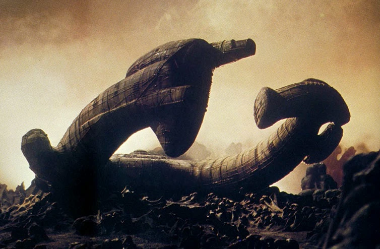
The Derelict on LV-426 in Alien (1979). (alienexplorations.blogspot.com)
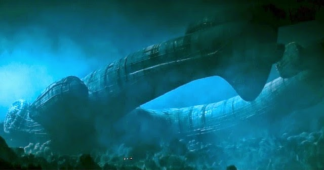
The Nostromo crew approaching the Derelict through the fog. (alienexplorations.blogspot.com)
USS Sulaco
The Sulaco is the Colonial Marine warship that carries the squad to LV-426 in Aliens (1986). Its large hangar holds the dropship and armored personnel carrier used during the mission. At the start of Alien 3, a fire aboard the Sulaco forces its escape pod to launch, sending Ripley to the prison planet Fiorina 161.
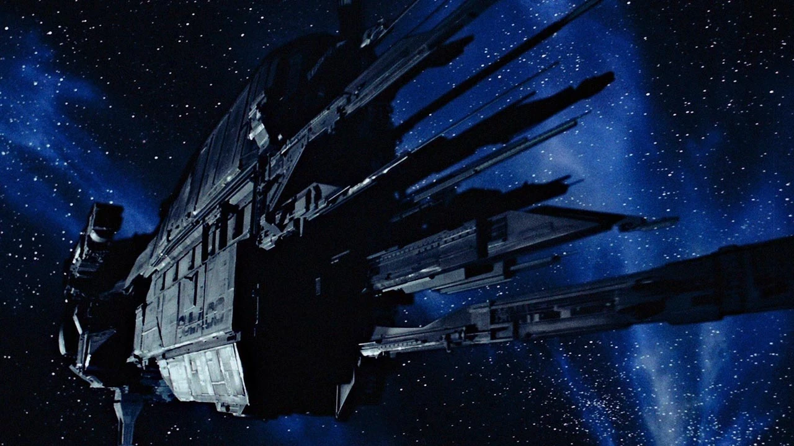
The USS Sulaco in Aliens (1986). (alienanthology.fandom.com)
USM Auriga
The Auriga is the military research vessel where Alien: Resurrection (1997) takes place. Two hundred years after Alien 3, scientists aboard the ship clone Ripley in order to recover the Xenomorph Queen growing inside her, then begin breeding Xenomorphs for study. After the creatures escape, the ship automatically heads for Earth, and it is destroyed in a crash before it can deliver them.
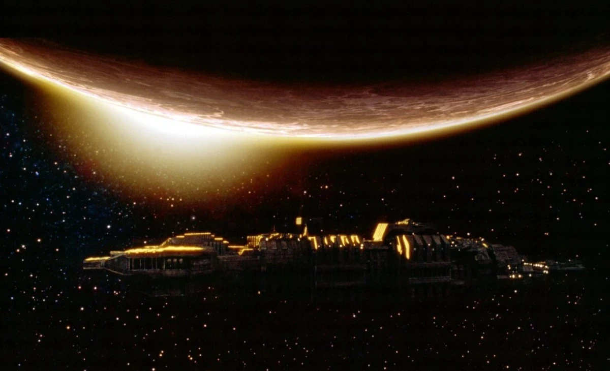
The USM Auriga in Alien: Resurrection (1997). (alienanthology.fandom.com)
USCSS Prometheus
The Prometheus is the scientific vessel funded by Peter Weyland in Prometheus (2012). Its crew travels to the moon LV-223 in search of the Engineers, whom they believe created humanity. When the crew learns that an Engineer ship is about to launch toward Earth carrying a deadly cargo, the captain deliberately rams the Prometheus into it to stop it.
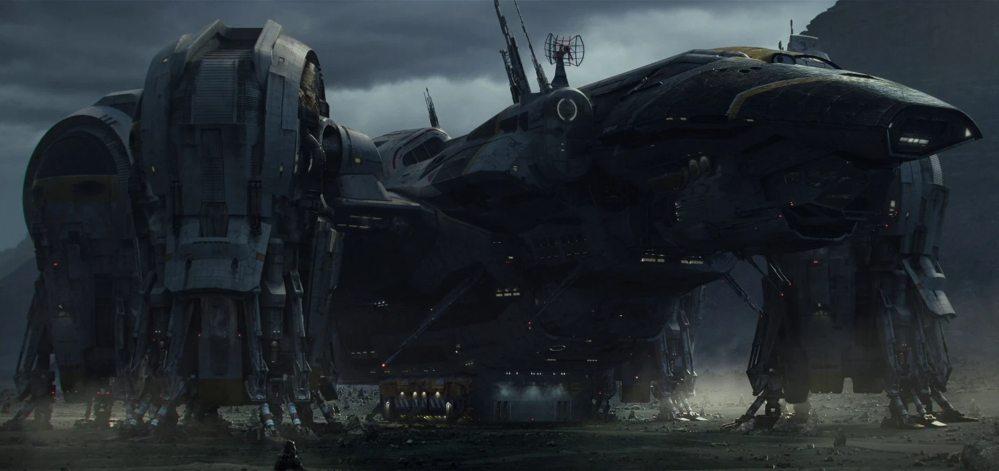
The USCSS Prometheus after landing on LV-223 in Prometheus (2012). (avp.fandom.com)
USCSS Covenant
The Covenant is the colony ship in Alien: Covenant (2017), carrying about 2,000 colonists in hypersleep and over 1,000 human embryos to the planet Origae-6. After a disaster damages the ship, the crew picks up a strange transmission and decides to investigate a closer planet, which turns out to be the Engineers' home world, where David has been living.
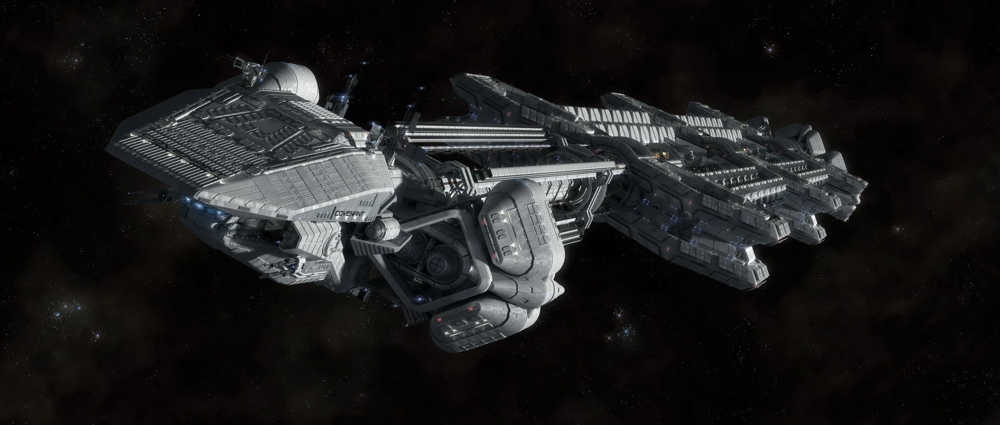
The colony ship USCSS Covenant in Alien: Covenant (2017). (avp.fandom.com)
Corbelan IV
The Corbelan IV is the small hauler flown by the group of young colonists in Alien: Romulus (2024). Hoping to escape their mining colony, they use it to reach an abandoned space station, planning to salvage the cryostasis equipment they need for the long journey to another world. Instead, they discover that the station is overrun by Xenomorphs.
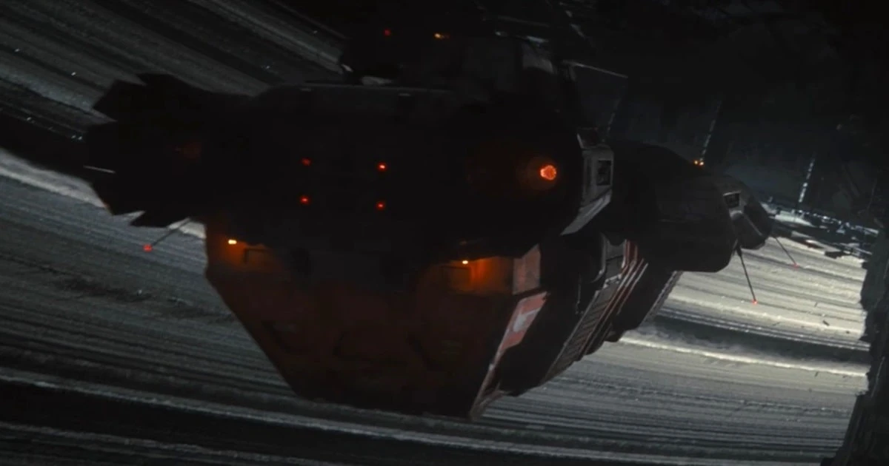
The Corbelan IV in Alien: Romulus (2024). (fernbyfilms.com)
LV-426 (Acheron)
LV-426 is a small, storm-covered moon orbiting a gas giant. Its atmosphere cannot support human life, and its surface is dark, rocky, and constantly battered by strong winds. It is the site of the Derelict in Alien and the Hadley's Hope colony in Aliens. Colonists later nicknamed the moon "Acheron."
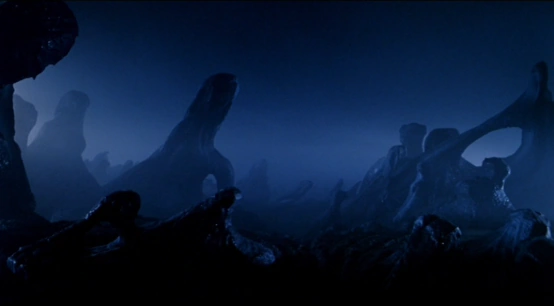
The surface of LV-426. (avp.fandom.com)
Hadley's Hope
Hadley's Hope is the human colony built on LV-426 between the events of the first two films. About 158 colonists lived there while large atmosphere processors slowly worked to make the moon livable. When the colony stops responding, the Marines are sent to investigate, only to find that the colonists have been taken by the Xenomorphs. The colony is destroyed at the end of Aliens when one of the atmosphere processors explodes.
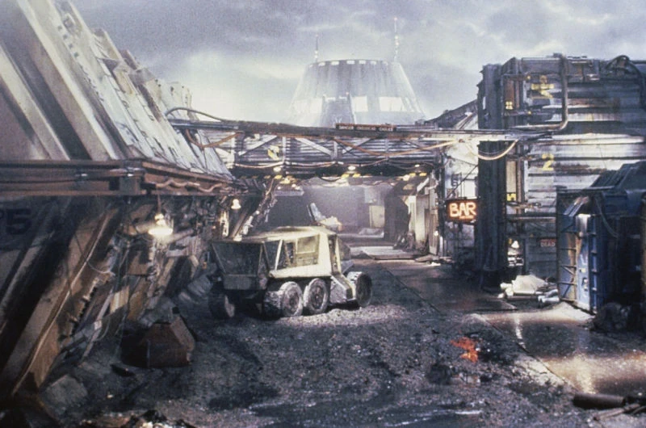
The streets of Hadley's Hope in Aliens (1986). (avp.fandom.com)
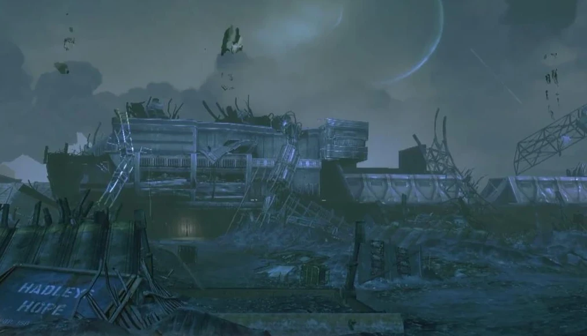
The destroyed remains of Hadley's Hope. (avp.fandom.com)
The Engineers' Planet
Alien: Covenant (2017) visits the home world of the Engineers, which is never named in the film. It is home to a massive stone city at the base of towering mountains. In a flashback, the android David flies an Engineer ship over the city and releases the black goo pathogen onto the crowd gathered below, wiping out the population. He then spends years on the planet conducting the experiments that lead to the Xenomorph.
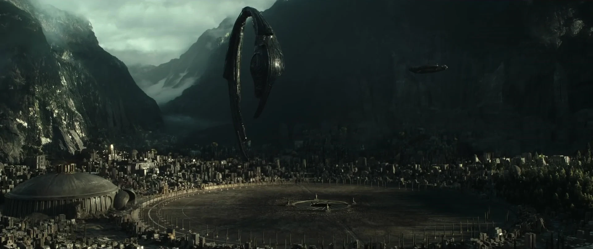
An Engineer ship arriving over the city in Alien: Covenant. (za.ign.com)
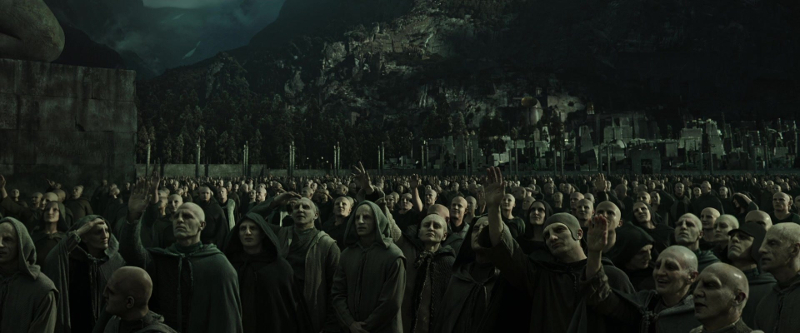
Engineers gather to greet the ship moments before the pathogen is released. (avpgalaxy.net)